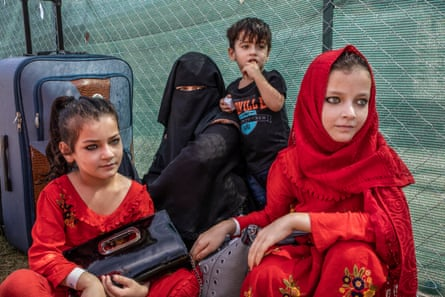
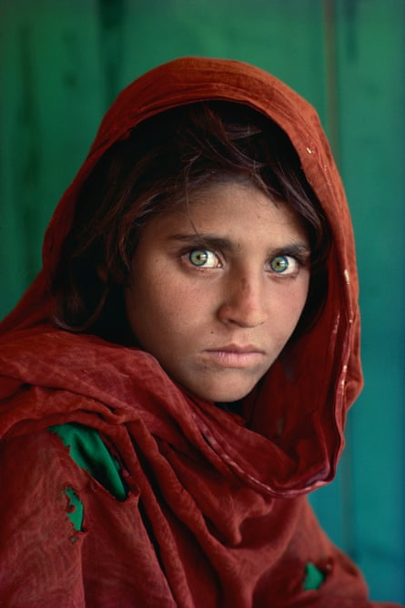

O n 1 September, a young Afghan girl stood in line with her family at a US base in Sicily waiting to board a flight to Philadelphia. She is about nine years old and is one of more than 100,000 people evacuated from Kabul by allied forces after the Taliban took control of the country in August.
Her photo, taken for the Guardian by Italian photojournalist Alessio Mamo and featured on the front page of the UK print edition, resembles the Afghan Girl by American photographer Steve McCurry . McCurry’s portrait, of a Pashtun child, Sharbat Gula, which appeared on the June 1985 cover of National Geographic, became the symbol, not only of Afghanistan, but of displaced refugees across the world.
An Afghan family wait to board a flight to the US at an American base in Sicily. The resemblance between the young girl (right) and Sharbat Gula in Steve McCurry’s photograph, Afghan Girl, taken over three decades ago, is a reminder of the failure of foreign interventions and the devastating effect on the lives of children.Photograph: Alessio Mamo/The Guardian
From a technical point of view, the photos are very different, yet there are striking similarities between the two Afghan girls, both physical and historical: both have intense green eyes and wear a red headscarf. Above all, despite being separated by more than 35 years, the two subjects are both refugees.
Viewed together, the two images seem to represent the failure of repeated invasions by foreign powers in Afghanistan , making it one of the most unstable areas on the planet.
“Yes, there are a lot of similarities between the two situations,” says McCurry in an interview with the Guardian. “Afghans find themselves in the same predicament as they were back in the 1980s. They’re questioning security, displaced and seeking refuge.”
McCurry first met Gula in Nasir Bagh refugee camp in Pakistan during the Soviet occupation of Afghanistan, when millions of people were displaced by the conflict between mujahideen insurgents and Soviet occupying forces. Gula, who was forced to flee from her village in eastern Nangarhar after it was bombed by the Soviets, walked with her family, including her three sisters, brother and grandmother, across the mountains to a Pakistan refugee camp.
When McCurry, who was following the conflict from Pakistan and the rebel-controlled areas of Afghanistan, saw her for the first time, he had no doubt: “I instantly knew that this was really the only picture I wanted to take,” he would later tell the press.
But McCurry’s work on Afghanistan did not end there. The American photographer visited the country throughout his career. Dressed in traditional clothes, with a full beard, he travelled for months with the mujahideen, documenting the brutality of the Soviet invasion before Russia closed the country to western journalists. McCurry witnessed first-hand the most important events of Afghanistan’s recent history, including 9/11, the impact of which would shape the country for 20 years. When the hijacked aircraft struck the twin towers, McCurry was in his study in New York. Shortly after, the Americans would begin to bomb the country that they occupied until last month . Afghanistan and the US became inextricably bound. But, according to McCurry, it did not start with 9/11; the two countries were intertwined long before, when the Americans “began sending billions of dollars to support the mujahideen in the early 1980s against the Afghan government, during the Soviet invasion”.
Steve McCurry’s Afghan Girl. A portrait of Sharbat Gula taken at Nasir Bagh refugee camp, Pakistan in 1984 as refugees fled the country during the Afghan-Soviet conflict.Photograph: Steve McCurry/Magnum
“We probably should have gotten out of Afghanistan within the first few years of being there,” he adds. “We should have learned from the Russian involvement in the 1980s. However, the way the withdrawal was conducted was a nightmare and a complete failure of our intelligence.”
The country is now in the hands of the Taliban, who immediately began rounding up anyone who had supported the previous government. On Tuesday, 20 civilians were killed in Afghanistan’s Panjshir valley , with the apparent execution of a man in uniform caught on video. Women pay the highest price . Since the Taliban seized Kabul, it has set up an all-male interim government and brought back the ministry of virtue and vice to police its strict interpretation of Islamic law.
“I was devastated for the people of Afghanistan, specifically for young Afghans whose dreams have been dashed,” he says. “The enormous waste of lives and trillions of dollars that could have done so much good in education and health care. I think it’s important to bring awareness to what is happening in Afghanistan and keep it on people’s radars. I have many Afghan friends and colleagues, and it’s heartbreaking to see the devastation they are experiencing. It’s important for us to do what we can to help the people of Afghanistan.”
Today, as in the 1980s, hundreds of thousands of Afghans are preparing to leave the country. Allied airlifts have evacuated those who worked with the occupying forces and their families who were at risk of Taliban reprisals. Among these is Ahmed*, who worked with US troops and who, at around midday on 1 September, queued with his family before boarding a flight to the US. At one point his daughter turned her gaze toward a group of journalists and photographers who arrived to document their departure for Philadelphia, coincidentally McCurry’s home town. She holds the prospect of a new life, something many who were not fortunate enough to leave the country are still seeking. According to the United Nations high commissioner for refugees, up to half a million Afghans could flee by the end of the year , with thousands already on the move towards Iran and Pakistan, the same area where McCurry met Gula.
Gula’s identity remained a mystery for 18 years, but in January 2002 McCurry and the National Geographic organised an expedition to discover whether she was still alive. Gula was found after months of searching, and McCurry photographed her again. McCurry learned that the girl who had become the reluctant symbol of her homeland, and who had been compared to Leonardo da Vinci’s Mona Lisa, had not had an easy life. After marrying at 13, Gula followed the vicissitudes of her country, moving in and out of refugee camps.
Since then McCurry has come under fire for altering some images (though not Gula’s), prompting a debate about authenticity in the photography community and beyond. At the time, he responded saying the manipulation had been a mistake. He described himself as “a visual storyteller” as opposed to a photojournalist. And Afghan Girl is arguably the most famous of those stories.
In 2016, Gula was arrested for living illegally in Pakistan under false papers , a common practice among the Afghan refugees who live there without legal status. She had five children, but one died shortly after birth, and suffered from hepatitis C, which killed her husband.
The main difference between the two girls, according to McCurry, is their fate. “The girl moving to the United States will most likely have more educational opportunities,” he says.
Before leaving Sicily, Ahmed told the Guardian that he hoped the US would help his daughter realise her dreams.
On the other side of the world, in Afghanistan, Gula faces yet more uncertainty under the Taliban. McCurry prefers not to talk about it: “We cannot talk about Sharbat at all in order to keep her safe.”
* Name has been changed